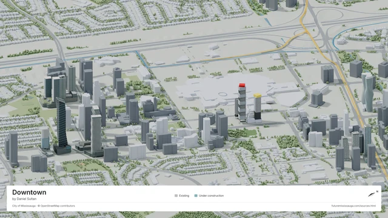

A new atlas of Mississauga
A 56-page atlas and a matched Downtown aerial bring the city’s changing neighbourhoods into print.

Three ways to see Downtown
Switch between existing buildings, construction and proposals from the same point above Square One.
A view across Square One
I re-rendered the city views and aligned all three skyline stages to one camera. The new edition includes 11 building booklets, a sharper atlas reader and 30 detailed building profiles with photographs and map links.
Explore 20 neighbourhoods
Open a neighbourhood for its aerial view, buildings and atlas page.
How to read the M City models
M1, M2 and M5 have individual exterior studies. The future phases show dated proposals. Each model links to its sources.